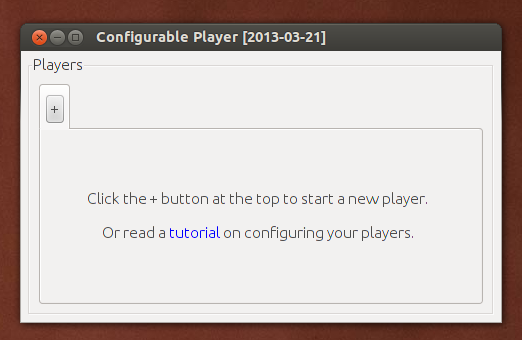
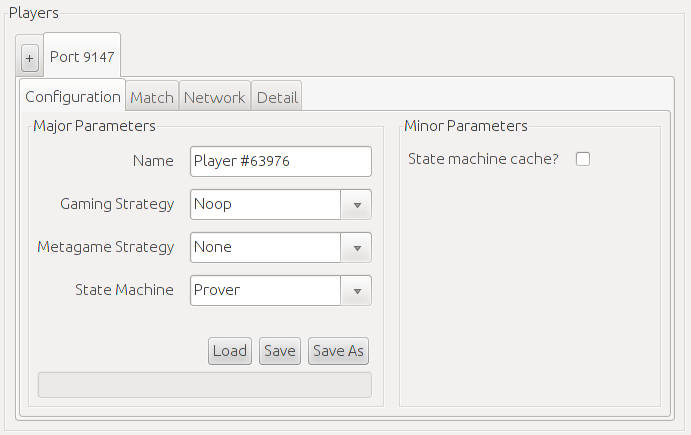
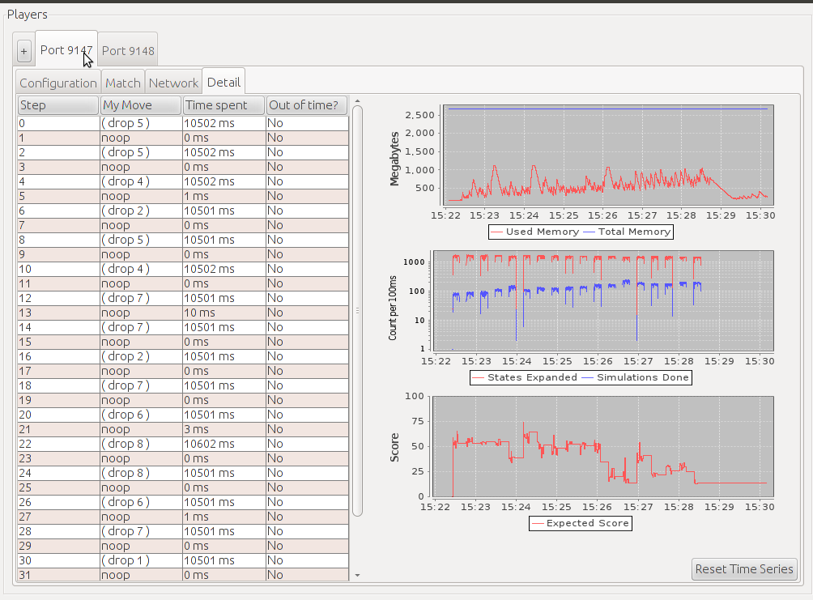

Setting up your own player can be easy with the configurable game player. To get started, first download the player to your computer. Once the program is downloaded, run it. When you start the player, you'll see a screen like this:
|  |
Click the + button at the top to create a new player. The player will be assigned a port and a random name automatically, and a tab will appear where you can configure the player and view details about its behavior. This tab will look like this:
|  |
Players are assigned ports starting from 9147. Each player gets four tabs: configuration, match, network, and detail. Configuration has all of the options for configuring your player: major choices like which gaming algorithm to use, and minor choices like how much importance to assign to each heuristic in the heuristic gaming algorithm. Match shows all of the matches that the player has been involved in since it was started. Network shows all of the messages that the player has received or sent over the network. Detail shows a move-by-move view of the player's status, along with time series graphs. The graphs show the player's memory usage, the rate at which the player is exploring game states, and the player's best guess about what score it will get.
|  |
The most important configuration choice that affects your player is the selection of the gaming strategy. This determines how your player chooses moves when playing games. There are several options available:
- Noop - always plays "noop", even if it's not a legal move.
- Legal - always plays the first legal move, in lexicographical order.
- Random - always plays a random legal move.
- Puzzle - attempts to completely solve the game, under the assumption that it's the only player, and then plays the move which results in the highest possible score.
- Minimax - attempts to completely solve the game using the minimax algorithm, and then plays the move which results in the highest possible score.
- Heuristic - attempts to solve the game using the minimax algorithm, falling back to a heuristic after exploring a certain number of plys, and then plays the move which results in the highest score.
- Monte Carlo - for each legal move, does many simulations of random play through the game after making that move, to determine an expected score if it makes that move, and then plays the move with the highest expected score.
- Monte Carlo Tree Search - for each legal move, does many MCTS simulations through the game after making that move, to determine an expected score if it makes that move, and then plays the move with the highest expected score.